Gradual Drift
Problem 0 (blocks-world)
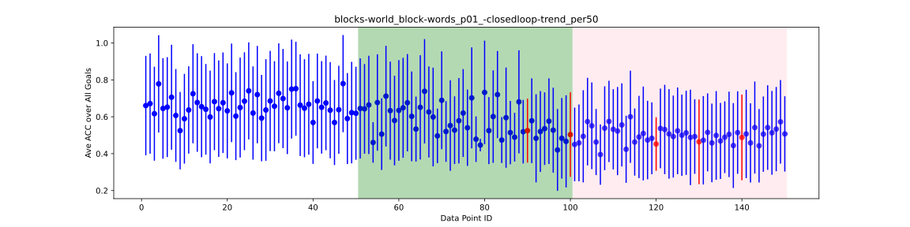
Problem 1 (blocks-world)

Problem 2 (blocks-world)

Problem 3 (blocks-world)

Problem 4 (blocks-world)
Problem 5 (blocks-world)

Problem 6 (depots)
Problem 7 (depots)
Problem 8 (driverlog)
Problem 9 (driverlog)
Problem 10 (driverlog)
Problem 11 (driverlog)
Problem 12 (driverlog)
Problem 13 (dwr)
Problem 14 (dwr)
Problem 15 (dwr)
Problem 16 (dwr)
Problem 17 (dwr)
Problem 18 (easy-ipc-grid)


Problem 19 (easy-ipc-grid)
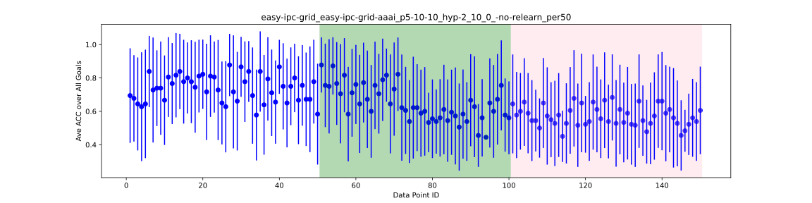
Problem 20 (easy-ipc-grid)
Problem 21 (easy-ipc-grid)
 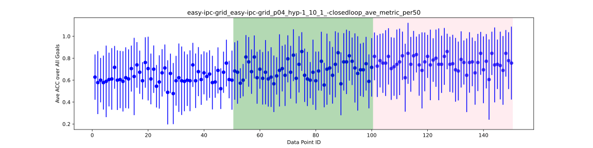
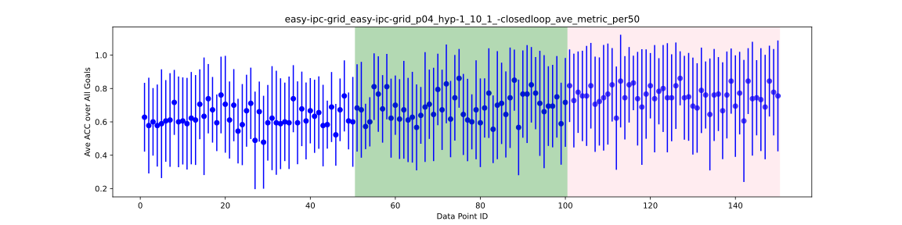

Problem 22 (easy-ipc-grid)
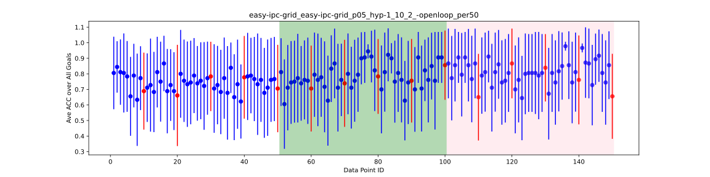
Problem 23 (easy-ipc-grid)

Problem 24 (easy-ipc-grid)

Problem 25 (easy-ipc-grid)
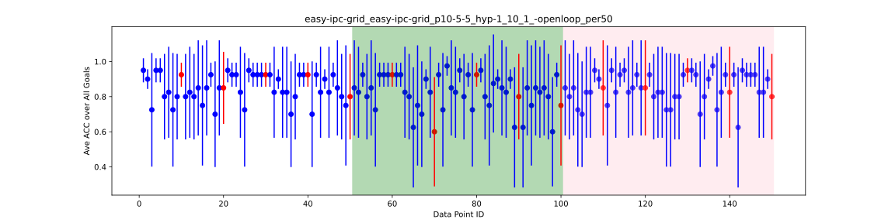
Problem 26 (easy-ipc-grid)
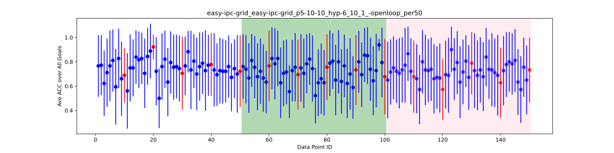

Problem 27 (easy-ipc-grid)
Problem 28 (ferry)

Problem 29 (ferry)

Problem 30 (ferry)


Problem 31 (ferry)


Problem 32 (ferry)
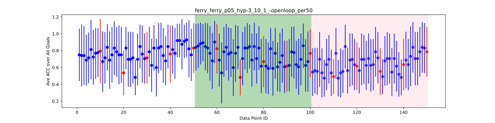 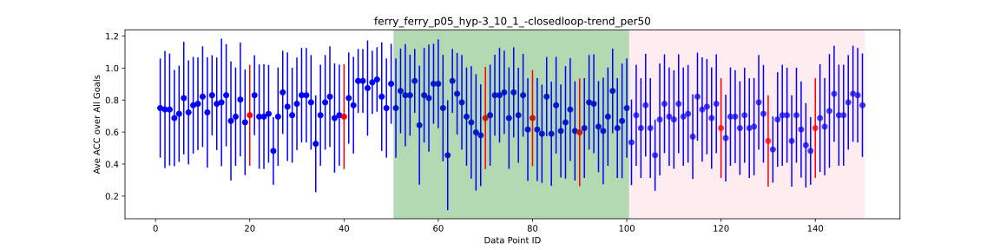
Problem 33 (ferry)
Problem 34 (intrusion-detection)
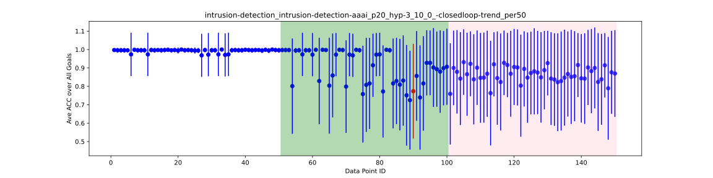
Problem 35 (intrusion-detection)
Problem 36 (intrusion-detection)
Problem 37 (logistics)
Problem 38 (logistics)
Problem 39 (logistics)
Problem 40 (logistics)
Problem 41 (logistics)
Problem 42 (logistics)
Problem 43 (logistics)
 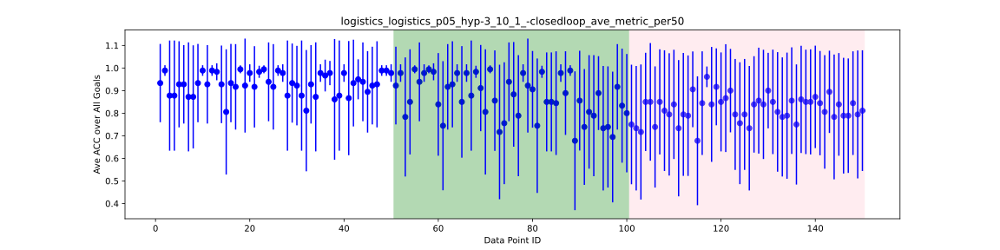
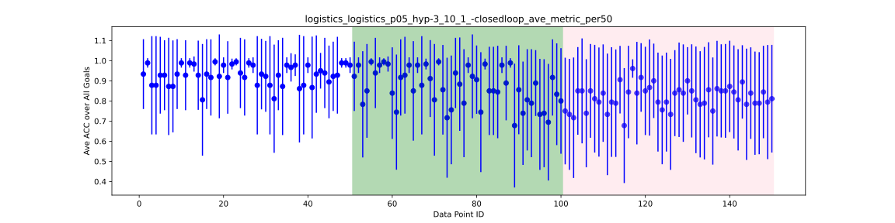
Problem 44 (logistics)
Problem 45 (logistics)
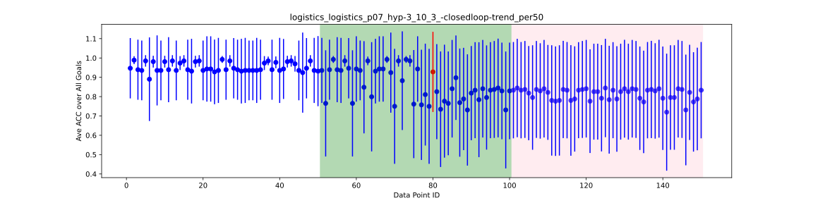
Problem 46 (miconic)
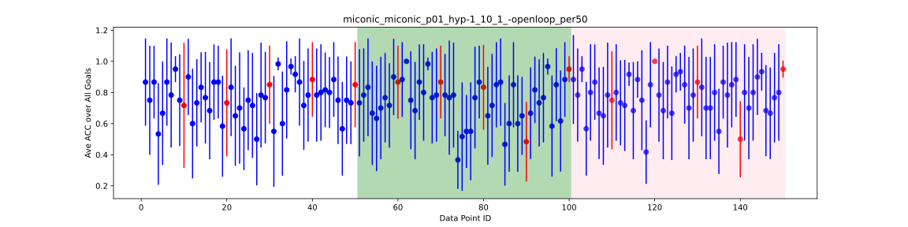 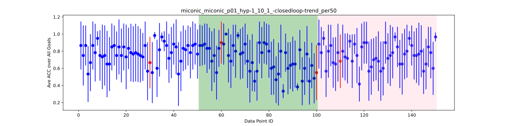
Problem 47 (miconic)
Problem 48 (miconic)

Problem 49 (miconic)

Problem 50 (miconic)
Problem 51 (miconic)
Problem 52 (miconic)

Problem 53 (rovers)
Problem 54 (rovers)
Problem 55 (rovers)
Problem 56 (rovers)
Problem 57 (rovers)
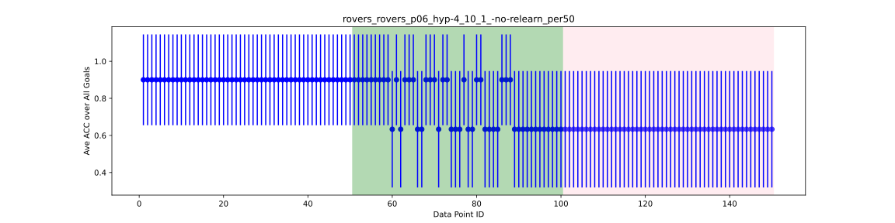
Problem 58 (rovers)
Problem 59 (satellite)
Problem 60 (satellite)
Problem 61 (satellite)
Problem 62 (satellite)
Problem 63 (satellite)
Problem 64 (satellite)
Problem 65 (satellite)


Problem 66 (sokoban)

Problem 67 (sokoban)
Problem 68 (sokoban)
Problem 69 (sokoban)
Problem 70 (sokoban)
Problem 71 (sokoban)
Problem 72 (zeno-travel)
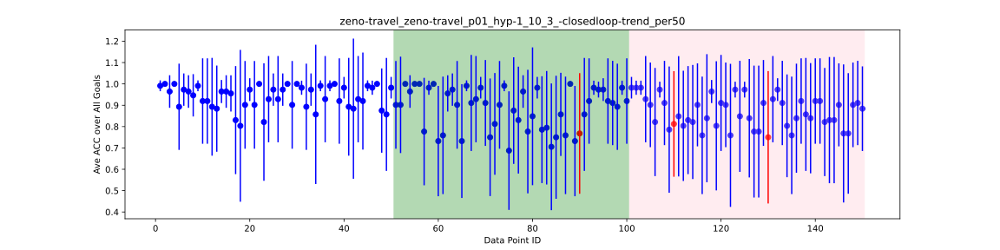
Problem 73 (zeno-travel)
Problem 74 (zeno-travel)
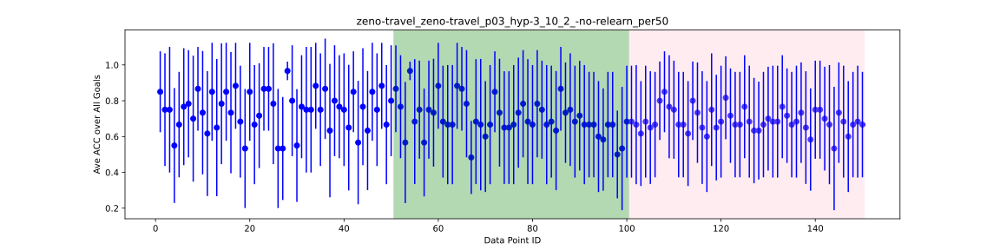
Problem 75 (zeno-travel)